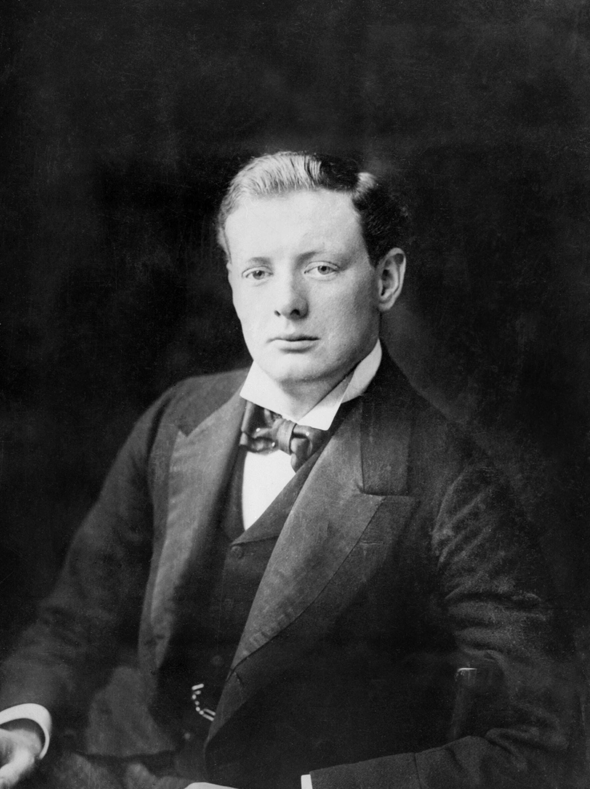
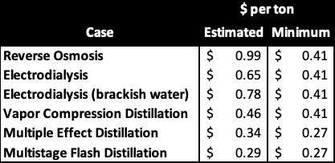
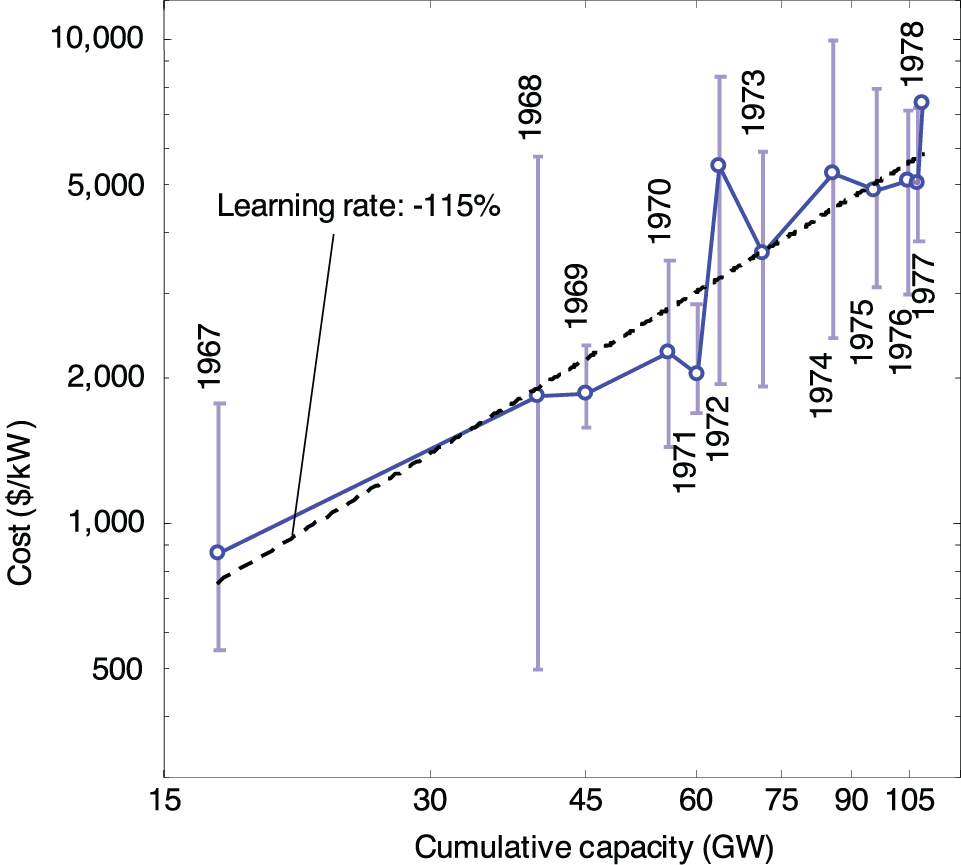
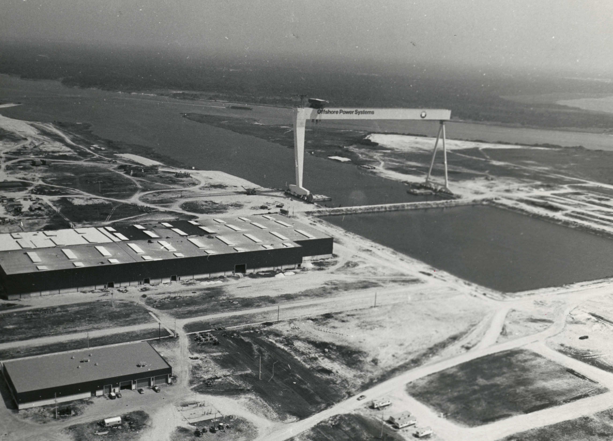
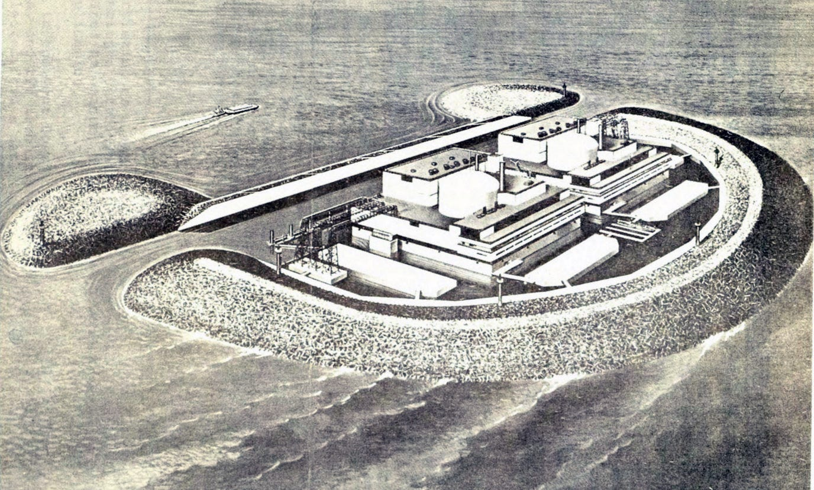

I’m Jonathan Burbaum, and this is Healing Earth with Technology: a weekly, Science-based, subscriber-supported serial. In this serial, I offer a peek behind the headlines of science, focusing (at least in the beginning) on climate change/global warming/decarbonization. I welcome comments, contributions, and discussions, particularly those that follow Deming’s caveat, “In God we trust. All others, bring data.” The subliminal objective is to open the scientific process to a broader audience so that readers can discover their own truth, not based on innuendo or ad hominem attributions but instead based on hard data and critical thought.
You can read Healing for free, and you can reach me directly by replying to this email. If someone forwarded you this email, they’re asking you to sign up. You can do that by clicking here.
If you really want to help spread the word, then pay for the otherwise free subscription. I use any fees to increase readership through Facebook and LinkedIn ads.
Today’s read: 17 minutes.
Today’s opening quote is only tangentially related to the topic of today’s installment. Still, it’s one of my favorite passages from one of my favorite authors, Winston Churchill, written when he was just 25 years old, near the peak of the British Empire.

“All great movements, every vigorous impulse that a community may feel, become perverted and distorted as time passes, and the atmosphere of the earth seems fatal to the noble aspirations of its peoples. A wide humanitarian sympathy in a nation easily degenerates into hysteria. A military spirit tends towards brutality. Liberty leads to licence, restraint to tyranny. The pride of race is distended to blustering arrogance. The fear of God produces bigotry and superstition. There appears no exception to the mournful rule, and the best efforts of men, however glorious their early results, have dismal endings; like plants which shoot and bud and put forth beautiful flowers, and then grow rank and coarse and are withered by the winter. It is only when we reflect that the decay gives birth to fresh life, and that new enthusiasms spring up to take the places of those that die, even as the acorn is nourished by the dead leaves of the oak or the phoenix rose from the ashes of the pyre, that the hope strengthens, that the rise and fall of men and their movements are only the changing foliage of the ever-growing tree of life, while underneath a greater evolution goes on continually.” W. S. Churchill, The River War - An Historical Account of the Reconquest of the Soudan, Volume 1, p. 57 (1899). Available here. Note that this text was written as he was emerging as a politician, but it shows his deep analytical mind and knowledge of the ways of the world.
In the context of this installment, consider that the modern environmental movement is precisely the sort of “vigorous impulse” that Churchill contemplates. Then, ask yourself, has this great movement become perverted and distorted into extremism? And, if so, what kind of new life might emerge from its decay?
Noteworthy for this installment, Churchill went on to greatness, but in the years leading to World War I, he occupied the role of First Lord of the Admiralty. In this role, he was primarily responsible for shifting the already-dominant Royal Navy from coal to petroleum (as a superior energy source). To achieve this transition, Churchill helped secure rights to oilfields in the Middle East (paving the way for British Petroleum, now BP, as a significant player in the world’s energy markets). So, he understood the nature of human impulses and the value of rational engineering when the facts on the ground change.
To lead off with, let me thank Will Regan, who introduced me to Eric Ingersoll (Lucid Catalyst), Nick Touran (Terra Power), and Uuganbayar (Ugi) Otgonbaatar (Exelon). In addition, I’d like to thank Prof. Jessika Trancik of MIT. All of these wonderfully generous folks contributed to my understanding of nuclear energy economics. Let me note that they contributed their knowledge for the record, but the deductions here are purely my own. (To be even more precise, they can take credit for any embedded ideas, but I accept the blame for any misinterpretations or errors!). Jessika coauthored an insightful paper on cost factors in constructing new nuclear power plants and was generous with her time in going through its details. Eric pointed me to a beautiful piece that his group wrote on hydrogen production using off-shore nuclear. Nick introduced me to the amazing story of Offshore Power Systems, and Ugi gave me a corporate perspective on why nuclear power is so expensive.
The story continues…
Let’s reiterate what the problem is and how possible solutions are constrained. Stated concisely:
The increase in carbon dioxide levels in the atmosphere, attributable to human extraction and combustion of geologic carbon over 350 years of industrialization, threatens to destabilize Earth’s climates.
Let’s now summarize our progress to a plausible solution.
To solve this problem, we must reduce the quantity of already-emitted carbon dioxide, not simply reduce the rate of its increase by “decarbonization”.
To remove carbon dioxide from the air using any direct engineering approach is prohibitively expensive, even if only the cost of energy is considered.
Photosynthesis is the only process that creates economic value from carbon dioxide because it uses (free) sunlight as its energy source.
Increasing Earth’s capacity for photosynthesis is a serious geoengineering challenge. The most direct approach is to produce irrigation water from ocean water—Earth has enough of both land and water so that any system can scale.
The energy required for the process must also come from carbon-free sources. Our only plausible choice is nuclear energy. We need to hit a cost target of less than $300 per acre-foot of irrigation water without subsidies to make it a business.
In the last installment, I provided an argument that the energy cost for irrigation water using state-of-the-art technology is about $180 per acre-foot. Of course, there are several other costs, but the other process input, seawater, is essentially free.
The question for this installment is as follows:
Can a business case be made for nuclear-powered agriculture?
Let’s avoid the cost-based pricing mistake of choosing a particular subsystem and externalizing all of the inconveniences so that we can forecast enough savings to attract investment. Instead, let’s imagine that we’re in the Jeff Bezos or Elon Musk class of the ultrawealthy and seek a monetary return from a substantial investment in a new enterprise. To start this thought experiment, let’s refer to the last installment, beginning with a process that is already reduced to practice, the Poseidon Water desalination facility in California. It employs reverse osmosis for desalination and uses electric power as an energy source. It is conveniently but uniquely located on the site of a decommissioned power plant on the coast of northern San Diego county. Using this as a model system, I estimated a cost of around $180 per acre-foot if we only account for the cost of energy generated as industrial-grade nuclear power. Based on this analysis, we are within striking distance of a profitable desalination process. But, to reach sustainable profitability, costs will need to come down in the long run. In the short run, of course, government mechanisms that value carbon removal (like the European Union’s Emissions Trading System) could make this investment attractive today.
So, in the long run, we’ll have to reduce costs. What do we have to keep, and what can we change? At a high level, the process is this: The heat of a nuclear reaction drives a turbine in a fixed location to generate electricity. The electricity is transmitted over power lines, and used by pumps to pressurize seawater. The pressure forces it through a membrane that removes the salt. The water is processed further for potability and supplied to consumers, while the excess salt returns to the ocean. We can’t change the energy requirements of the primary process, but we can simplify the system to reduce construction and operation costs.
First, let’s consider the desalination process. There are many approaches, and all have tradeoffs, but there are very few public calculations of cost. One that I found shows:

The authors of this table use simplified models and rely on a few specific assumptions about energy and materials costs for each case. If these assumptions are tweaked, the rank order of the technologies changes. But in this particular analysis, there’s a 2-3 fold spread in cost, where reverse osmosis (RO), the technology used in San Diego, is priciest while multistage flash distillation (MSF) is cheapest. These numbers aren’t precise or detailed enough to drive the choice of approach now. Still, the analysis highlights the potential for significant cost reduction based on the technology chosen for desalination. [Notably, one of the largest multistage flash desalination plants is in the desert kingdom of Saudi Arabia, where the process uses crude oil (!!) for heat. The Saudis find it beneficial to trade oil for water!] The difference in the “minimum” cost is primarily related to the energy source, with electricity (for the top four cases) assumed to be more expensive than heat (in the bottom two). As another cost savings approach, drinking water must be free of biological or organic contamination, while irrigation water has fewer requirements. This feature may allow engineers to choose a more straightforward alternative because salt removal is the prime directive.
Now, let’s consider nuclear energy. There’s a distinction, and a numerical difference, between nuclear energy and nuclear power. Nuclear energy produces heat, and the heat produces steam to drive a turbine, producing electric power. This energy conversion process (like all processes) is not 100% efficient, so energy is lost. In the case of nuclear power generation, only 30-40% of the energy becomes power. The rest is lost as waste heat. So, a purpose-built system to produce fresh water from the ocean needs to generate enough electricity to power the system and use heat for additional desalination. The design could be a hybrid of RO and MSF, for example. We can point engineers at the problem and measure their designs against the ultimate ‘cost-per-acre-foot’ metric. Then, they can use their ingenuity (like Henry Ford and the engineers of the Model T) to hit that target, based on market value. But, first, we must overcome the social stigma of nuclear.
Nuclear power plants are currently cheap to operate but expensive to engineer, and safety measures add costs. Nuclear feels risky because most of us don’t understand it well enough, and what most of us have experienced comes indirectly from a few newsworthy accidents. So. as humans, we over-estimate the risk of nuclear technology. This anxiety translates into layers of redundancy that add cost, a waste of capital when the engineering is expected to address rare failure modes. On the other hand, as a professional class, engineers have decades of experience with nuclear safety. As I pointed out in the previous installment, the most significant safety concern with nuclear energy is providing adequate cooling in the event of a malfunction.
Here’s a breakdown of cost increases over time for nuclear construction. Unlike most consumer technologies, construction costs increased over time:

There are other factors beyond construction materials and labor that raise costs, particularly site-specific engineering. For example, every nuclear power plant location is unique, and it requires many layers of custom environmental analysis. Further, because electricity can’t be stored or transported over long distances, construction must be relatively near cities, requiring both extra layers of containment for safety and extra patience for seemingly endless public hearings. What if there were a standardized design for desalination (analogous to the Model T automobile) located far from cities? Construction costs would undoubtedly be lower.
Now that bars are reopening, let me share with you a bar bet that may get you a free drink or two, at least among nerds. The question is, “What U. S. State has the most operating nuclear reactors?”. The wry answer, “Hawaii—it’s home to the nuclear Navy!”1 My point here is that the focus on safety, while thoroughly justified, is amplified by human perception—The question also serves to point out that our Navy has used reactors designed in the 1950s without incident for more than half a century.
The bottom line answer to the question I posed at the outset? Can a business case be made? Yes, it most certainly can! Honestly, if I were among the ultrawealthy and wanted to leave a lasting legacy, I’d build at least one of these plants to teach the world that it’s possible. I think my elite “peers” (hypothetically!) would agree: Aggressive innovation driven by a profit motive beats the heck out of philanthropy.
So, I’ve been leaving breadcrumbs on the path to a practical solution, and I trust that it’s obvious now.
Build the power plant on a ship in the ocean, and dedicate its energy entirely to desalination.
The strategic choice of seaborne nuclear solves several design problems. First, locating it in the ocean is inherently safer for people. The ocean is enormous, and a nuclear reactor in the open ocean would be far from where people live and could move if needed. [This would help with security as well.] Second, the cooling capacity of seawater is practically unlimited, reducing the burden on engineering and allowing for a fail-safe. Third, the ocean is relatively homogenous so that if engineers solve site-specific problems once, they can apply the solutions to many installations. Finally, the water source is right there. The produced water can be separated, stored onboard or on dedicated transportation vessels, and discharged at a marine pipeline terminal like petroleum or natural gas. Water can be stored practically anywhere, even in dry lakes, unlike electricity or other high-energy products made off-shore. This product feature means that production can be continuous, so the design will only require an on-off switch for control, reducing labor costs. Finally, any waste brine can easily be diluted into the open ocean or perhaps buried in the deep ocean to sequester additional carbon, minimizing its environmental impact and maximizing its usefulness for environmental remediation. All of these aspects will reduce engineering costs and improve efficiencies. If we can do it once, we can replicate it until we have enough capacity to impact the climate.
This idea is not new, and it’s not even mine. It was suggested to me by Eric Ingersoll of the environmental consulting firm Lucid Catalyst. A recent report by Eric and Kirsty Gogan details the idea for a different purpose, producing hydrogen off-shore.2 In this report, they calculate that building nuclear reactors in a shipyard environment can cut reactor manufacturing costs in half. In addition, providing a mobile platform would allow operators to centralize maintenance, and maintenance costs will be lower with a simpler design.
The choice of shipyard construction is not pie-in-the-sky think-tank stuff. For decades, the nuclear Navy has operated reactors in the open ocean—we know how to do this. Likewise, floating nuclear power plants have been designed and permitted in the United States in the private sector, with a complete manufacturing facility in Jacksonville, Florida, ready to mass-produce them!
This privately-funded endeavor, Offshore Power Systems, is a fascinating story of how the environmental movement of the 1970s, and resulting regulation, have inadvertently conspired to make our environmental future less secure. The focus on perfect safety and public perception, paradoxically, has weakened our ability to respond to the technological challenge of climate change. We were so close!!
Here’s the 1970s-vintage documentation:


Finally, to put another real-world example out there, nuclear desalination is already a lifesaver. For example, the Navy deployed the USS Carl Vinson (a nuclear-powered aircraft carrier) to Port au Prince after the 2010 earthquake in Haiti. It provided several hundred thousand gallons of drinking water per day using its excess onboard capacity. That’s enough drinking water to support 750,000 people, a significant fraction of the city’s population.
Now let’s turn to the question of scale. Suppose we wanted to engineer nuclear-powered agriculture to absorb all the excess carbon emitted each year, using the combined designs of the San Diego desalination plant and the OPS power generation system. How many reactors would we be talking about?
Using the 4.4 MWh per acre-foot of the San Diego plant and the 1 GW size of the OPS reactor, one OPS reactor, if operated continuously, could produce 1,000 x 24 x 365 / 4.4 or about 2,000,000 acre-feet per year. Based on a cursory examination of crop requirements in the Imperial Valley, it looks like irrigation can sustain various types of agriculture with about 2 feet of irrigation water per acre per year. So one OPS reactor would support roughly 1,000,000 acres of agriculture, with about $600M top-line revenue per year. Earlier, I estimated that around 7% of Earth’s surface (approximately the size of the Sahara Desert) would need to be “greened” to absorb our annual emissions. That works out to about 8.8 billion acres, so we’d need 8,800 OPS-sized reactors to balance things out. That’s a lot, but it’s not unimaginable. [I should note that this crude analysis assumes that irrigation would green the Sahara to an “average” extent. If it were used for agriculture and controlled by humans, the greening would likely be closer to a “maximum” extent, leading to a smaller footprint.]
From a hardware construction perspective, there are about 50,000 “container ships” on the ocean today. We didn’t launch the first ones until after World War II—we can scale manufacturing fast enough. Likewise, there are about 35,000 power plants worldwide, and Edison built his first one only 140 years ago. Increasing reactor size and improving the efficiency of desalination will decrease both the cost per acre-foot and the number of these deployments that are needed. Still, real engineers need to devote quality time to the problem, not just back of the envelope guys like me.
This analysis highlights the “scale” problem that other technologies face. If we’re going to absorb just our annual carbon dioxide emissions today, we have to imagine a technology that can expand enough to green the Sahara. It’s BIG. Does it have to be THAT big? Perhaps not, but it’s a starting point.
But what about the environmental impact?? You can bet there’d be an impact, but it has to be weighed against business-as-usual, which is slowly but surely melting the polar icecaps among other environmental catastrophes.
What’s the sensitivity of this solution to the various approximations and assumptions? Well, doubling the efficiency of water or land use would only require half the area, of course—but that’s still half the Sahara. But before you scoff at the prospect or express concern about the magnitude of the proposed changes, consider this: The Sahara is smaller in area than either polar ice cap, and we are already acting in a way that will melt them. So the choice isn’t whether or not to do it. The choice is whether doing it is better than doing nothing.
The upside of nuclear agriculture is that it has been estimated that it takes about 5 acres of arable land to feed an American (down from about 40 acres when we had to feed draft animals as well, but above the sustenance level of about 1 acre per person). The added agricultural capacity could feed a few billion people with an ample Western diet. This is a desirable outcome because the world’s population is expected to grow along with rising standards of living.
This is the last installment of the series. Over the holidays, I will consolidate these 12 parts into a single post to summarize the thread in a more concise and shareable manner, perhaps including a short video teaser.
To Heal the Earth with Technology, we need to label our perceptions as “thinking” and “feeling” and to focus on those perceptions with a rational basis. Any change will “feel” scary. This series has allowed me (and hopefully, you!) to see both the problem and the solution with a clearer sense of scale and urgency.
In the meantime, I’m going to look toward lighter fare that can be digested in a single installment. Such is the nature of today’s communication.
To be entirely fair, the answer may vary because it depends on where the fleet is deployed at any given point in time. At times, it could be Virginia or Alaska for the same reason, but the chances of it being Hawaii are pretty high. There are 83 nuclear warships in the US Navy and only 55 nuclear power plants operating in the US.
Chapter 6 of Ingersoll & Gogan, “Missing Link to a Livable Climate: How Hydrogen-Enabled Synthetic Fuels Can Help Deliver the Paris Goals”, published online, September 2020. Available at this link.